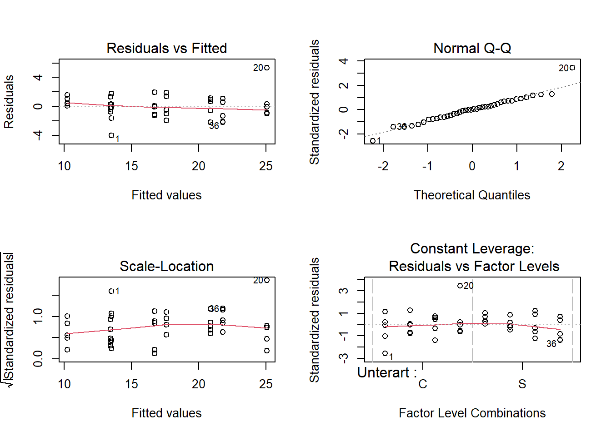

Übungsaufgabe (hier so ausführlich formuliert, wie dies auch in der Klausur der Fall sein wird)
Laden Sie den Datensatz kormoran.csv mit ein Dieser enthält Tauchzeiten (hier ohne Einheit) von Kormoranen in Abhängigkeit von Jahreszeit und Unterart. Unterarten: Phalacrocorax carbo carbo (C) und Phalacrocorax carbo sinensis (S); Jahreszeiten: F = Frühling, S = Sommer, H = Herbst, W = Winter.
Ihre Gesamtaufgabe ist es, aus diesen Daten ein minimal adäquates Modell zu ermitteln, das diese Abhängigkeit beschreibt.
Bitte erklären und begründen Sie die einzelnen Schritte, die Sie unternehmen, um zu diesem Ergebnis zu kommen. Dazu erstellen Sie bitte ein Word-Dokument, in das Sie Schritt für Schritt den verwendeten R-Code, die dazu gehörigen Ausgaben von R, Ihre Interpretation derselben und die sich ergebenden Schlussfolgerungen für das weitere Vorgehen dokumentieren.
Dieser Ablauf sollte insbesondere beinhalten:
Überprüfen der Datenstruktur nach dem Einlesen, welches sind die abhängige(n) und welches die unabängige(n) Variablen, welches statistische Verfahren wenden Sie an?
Explorative Datenanalyse, um zu sehen, ob schon vor dem Start der Analysen Transformationen o.ä. vorgenommen werden sollten
Definition eines vollen Modelles, das nach statistischen Kritierien zum minimal adäquaten Modell reduziert wird
Durchführen der Modelldiagnostik, um zu entscheiden, ob das gewählte Vorgehen korrekt war oder ggf. angepasst werden muss
Generieren aller Zahlen, Statistiken und Tabellen, die für eine wiss. Ergebnisdarstellung benötigt werden
Formulieren Sie abschliessend einen Methoden- und Ergebnisteil (ggf. incl. adäquaten Abbildungen) zu dieser Untersuchung in der Form einer wissenschaftlichen Arbeit (ausformulierte schriftliche Zusammenfassung, mit je einem Absatz von ca. 60-100 Worten, resp. 3-8 Sätzen für den Methoden- und Ergebnisteil). D. h. alle wichtigen Informationen sollten enthalten sein, unnötige Redundanz dagegen vermieden werden.
Zu erstellen sind (a) Ein lauffähiges R-Skript; (b) begründeter Lösungsweg (Kombination aus R-Code, R Output und dessen Interpretation) und (c) ausformulierter Methoden- und Ergebnisteil (für eine wiss. Arbeit).
Kommentierter Lösungsweg
library("readr")# Working directory muss angepasst werdenkormoran <-read_delim("datasets/stat1-4/kormoran.csv", ";", col_types =cols("Unterart"="f", "Jahreszeit"="f")) # Ueberpruefen, ob Einlesen richtig funktioniert hat und welche Datenstruktur vorliegtstr(kormoran)
Obs Tauchzeit Unterart Jahreszeit
Min. : 1.00 Min. : 9.50 C:20 F:10
1st Qu.:10.75 1st Qu.:13.38 S:20 S:10
Median :20.50 Median :16.75 H:10
Mean :20.50 Mean :17.40 W:10
3rd Qu.:30.25 3rd Qu.:20.77
Max. :40.00 Max. :30.40
Man erkennt, dass es sich um einen Dataframe mit einer metrischen (Tauchzeit) und zwei kategorialen (Unterart, Jahreszeit) Variablen handelt. Die adäquate Analyse (1 metrische Abhängige vs. 2 kategoriale Unabhängige) ist damit eine zweifaktorielle ANOVA Die Sortierung der Jahreszeiten (default: alphabetisch) ist inhaltlich aber nicht sinnvoll und sollte angepasst werden.
# Umsortieren der Faktoren, damit sie in den Boxplots eine sinnvolle Reihung habenkormoran$Jahreszeit <-ordered(kormoran$Jahreszeit, levels =c("F", "S", "H", "W"))kormoran$Jahreszeit
[1] F F F F F S S S S S H H H H H W W W W W F F F F F S S S S S H H H H H W W W
[39] W W
Levels: F < S < H < W
# Explorative Datenanalyse (zeigt uns die Gesamtverteilung)boxplot(kormoran$Tauchzeit)
Das ist noch OK für parametrische Verfahren (Box ziemlich symmetrisch um Median, Whisker etwas asymmetrisch aber nicht kritisch). Wegen der leichten Asymmetrie (Linksschiefe) könnte man eine log-Transformation ausprobieren.
boxplot(log10(kormoran$Tauchzeit))
Der Gesamtboxplot für log10 sieht perfekt symmetrisch aus, das spräche also für eine log10-Transformation. De facto kommt es aber nicht auf den Gesamtboxplot an, sondern auf die einzelnen.
# Explorative Datenanalyse# (Check auf Normalverteilung der Residuen und Varianzhomogenitaet)boxplot(Tauchzeit ~ Jahreszeit * Unterart, data = kormoran)
boxplot(log10(Tauchzeit) ~ Jahreszeit * Unterart, data = kormoran)
Hier sieht mal die Verteilung für die untransformierten Daten, mal für die transformierten besser aus. Da die Transformation keine klare Verbesserung bringt, bleiben wir im Folgenden bei den untransformierten Daten, da diese leichter (direkter) interpretiert werden können
# Vollständiges Modell mit Interaktionaov.1<-aov(Tauchzeit ~ Unterart * Jahreszeit, data = kormoran)aov.1
Call:
aov(formula = Tauchzeit ~ Unterart * Jahreszeit, data = kormoran)
Terms:
Unterart Jahreszeit Unterart:Jahreszeit Residuals
Sum of Squares 106.929 756.170 11.009 84.992
Deg. of Freedom 1 3 3 32
Residual standard error: 1.629724
Estimated effects may be unbalanced
Das volle (maximale) Modell zeigt, dass es keine signifikante Interaktion zwischen Jahreszeit und Unterart gibt. Wir können das Modell also vereinfachen, indem wir die Interaktion herausnehmen (+ statt * in der Modellspezifikation)
# Modellvereinfachungaov.2<-aov(Tauchzeit ~ Unterart + Jahreszeit, data = kormoran)aov.2
Call:
aov(formula = Tauchzeit ~ Unterart + Jahreszeit, data = kormoran)
Terms:
Unterart Jahreszeit Residuals
Sum of Squares 106.929 756.170 96.001
Deg. of Freedom 1 3 35
Residual standard error: 1.656166
Estimated effects may be unbalanced
Im so vereinfachten Modell sind alle verbleibenden Terme signifikant, wir sind also beim „minimal adäquaten Modell“ angelangt
# Anderer Weg, um zu pruefen, ob man das komplexere Modell mit Interaktion behalten sollanova(aov.1, aov.2)
Analysis of Variance Table
Model 1: Tauchzeit ~ Unterart * Jahreszeit
Model 2: Tauchzeit ~ Unterart + Jahreszeit
Res.Df RSS Df Sum of Sq F Pr(>F)
1 32 84.992
2 35 96.001 -3 -11.009 1.3817 0.2661
# In diesem Fall bekommen wir den gleichen p-Wert wie oben (0.266)# Modelldiagnostikpar(mfrow =c(2, 2)) # alle vier Abbildungen in einem 2 x 2 Rasterplot(aov.2)

influence.measures(aov.2) ## kann man sich zusätzlich zum "plot" ansehen, um herauszufinden,# ob es evtl. sehr einflussreiche Werte mit Cook's D von 1 oder grösser gibt
Links oben ist alles bestens, d. h. keine Hinweise auf Varianzheterogenität („Keil“) oder Nichtlinearität („Banane“) Rechts oben ganz gut, allerdings weichen Punkte 1 und 20 deutlich von der optimalen Gerade ab -> aus diesem Grund können wir es doch noch mal mit der log10-Transformation versuchen (s.u.) Rechts unten: kein Punkt hat einen problematischen Einfluss (die roten Linien für Cook’s D > 0.5 und > 1 sind noch nicht einmal im Bildausschnitt.
# Alternative mit log10aov.3<-aov(log10(Tauchzeit) ~ Unterart + Jahreszeit, data = kormoran)aov.3
Call:
aov(formula = log10(Tauchzeit) ~ Unterart + Jahreszeit, data = kormoran)
Terms:
Unterart Jahreszeit Residuals
Sum of Squares 0.0627004 0.4958434 0.0562031
Deg. of Freedom 1 3 35
Residual standard error: 0.04007247
Estimated effects may be unbalanced
Rechts oben: Punkt 20 jetzt auf der Linie, aber Punkt 1 weicht umso deutlicher ab -> keine Verbesserung -> wir bleiben bei den untransformierten Daten. Da wir keine Interaktion zwischen Unterart und Jahreszeit festgestellt haben, brauchen wir auch keinen Interaktionsplot (unnötig kompliziert), statt dessen können wir die Ergebnisse am besten mit zwei getrennten Plots für die beiden Faktoren darstellen. Bitte die Achsenbeschriftungen und den Tukey post-hoc-Test nicht vergessen.
par(mfrow =c(1, 1)) # Zurückschalten auf Einzelplotslibrary("multcomp")boxplot(Tauchzeit ~ Unterart, data = kormoran)
letters <-cld(glht(aov.2, linfct =mcp(Jahreszeit ="Tukey")))boxplot(Tauchzeit ~ Jahreszeit, data = kormoran)mtext(letters$mcletters$Letters, at =1:4)
Jetzt brauchen wir noch die Mittelwerte bzw. Effektgroessen
Für den Ergebnistext brauchen wir auch noch Angaben zu den Effektgrössen. Hier sind zwei Möglichkeiten, um an sie zu gelangen.
# A tibble: 2 × 2
Unterart Tauchzeit
<fct> <dbl>
1 C 19.0
2 S 15.8
summary(lm(Tauchzeit ~ Jahreszeit, data = kormoran))
Call:
lm(formula = Tauchzeit ~ Jahreszeit, data = kormoran)
Residuals:
Min 1Q Median 3Q Max
-3.820 -1.617 -0.145 1.587 6.980
Coefficients:
Estimate Std. Error t value Pr(>|t|)
(Intercept) 17.4000 0.3754 46.351 < 2e-16 ***
Jahreszeit.L 8.6804 0.7508 11.562 1.12e-13 ***
Jahreszeit.Q 0.4800 0.7508 0.639 0.527
Jahreszeit.C -0.1923 0.7508 -0.256 0.799
---
Signif. codes: 0 '***' 0.001 '**' 0.01 '*' 0.05 '.' 0.1 ' ' 1
Residual standard error: 2.374 on 36 degrees of freedom
Multiple R-squared: 0.7884, Adjusted R-squared: 0.7708
F-statistic: 44.72 on 3 and 36 DF, p-value: 3.156e-12
summary(lm(Tauchzeit ~ Unterart, data = kormoran))
Call:
lm(formula = Tauchzeit ~ Unterart, data = kormoran)
Residuals:
Min 1Q Median 3Q Max
-9.535 -3.585 -0.335 3.760 11.365
Coefficients:
Estimate Std. Error t value Pr(>|t|)
(Intercept) 19.035 1.059 17.976 <2e-16 ***
UnterartS -3.270 1.498 -2.184 0.0352 *
---
Signif. codes: 0 '***' 0.001 '**' 0.01 '*' 0.05 '.' 0.1 ' ' 1
Residual standard error: 4.736 on 38 degrees of freedom
Multiple R-squared: 0.1115, Adjusted R-squared: 0.08811
F-statistic: 4.768 on 1 and 38 DF, p-value: 0.03523
Quellcode
---date: 2023-10-31lesson: Stat2thema: Einführung in lineare Modelleindex: 6format: html: code-tools: source: trueknitr: opts_chunk: collapse: false---# Stat2: Lösung 2.3N- Download dieses Lösungsscript via "\</\>Code" (oben rechts)- [Lösungstext als Download](Statistik_Loesung_2.3N.pdf)**Übungsaufgabe (hier so ausführlich formuliert, wie dies auch in der Klausur der Fall sein wird)**- Laden Sie den Datensatz kormoran.csv mit ein Dieser enthält Tauchzeiten (hier ohne Einheit) von Kormoranen in Abhängigkeit von Jahreszeit und Unterart. Unterarten: Phalacrocorax carbo carbo (C) und Phalacrocorax carbo sinensis (S); Jahreszeiten: F = Frühling, S = Sommer, H = Herbst, W = Winter.- **Ihre Gesamtaufgabe ist es, aus diesen Daten ein minimal adäquates Modell zu ermitteln, das diese Abhängigkeit beschreibt.**- Bitte erklären und begründen Sie die einzelnen Schritte, die Sie unternehmen, um zu diesem Ergebnis zu kommen. Dazu erstellen Sie bitte ein Word-Dokument, in das Sie Schritt für Schritt den verwendeten R-Code, die dazu gehörigen Ausgaben von R, Ihre Interpretation derselben und die sich ergebenden Schlussfolgerungen für das weitere Vorgehen dokumentieren.- Dieser Ablauf sollte insbesondere beinhalten: - Überprüfen der Datenstruktur nach dem Einlesen, welches sind die abhängige(n) und welches die unabängige(n) Variablen, welches statistische Verfahren wenden Sie an? - Explorative Datenanalyse, um zu sehen, ob schon vor dem Start der Analysen Transformationen o.ä. vorgenommen werden sollten - Definition eines vollen Modelles, das nach statistischen Kritierien zum minimal adäquaten Modell reduziert wird - Durchführen der Modelldiagnostik, um zu entscheiden, ob das gewählte Vorgehen korrekt war oder ggf. angepasst werden muss - Generieren aller Zahlen, Statistiken und Tabellen, die für eine wiss. Ergebnisdarstellung benötigt werden- Formulieren Sie abschliessend einen Methoden- und Ergebnisteil (ggf. incl. adäquaten Abbildungen) zu dieser Untersuchung in der Form einer wissenschaftlichen Arbeit (ausformulierte schriftliche Zusammenfassung, mit je einem Absatz von ca. 60-100 Worten, resp. 3-8 Sätzen für den Methoden- und Ergebnisteil). D. h. alle wichtigen Informationen sollten enthalten sein, unnötige Redundanz dagegen vermieden werden.- **Zu erstellen sind (a) Ein lauffähiges R-Skript; (b) begründeter Lösungsweg (Kombination aus R-Code, R Output und dessen Interpretation) und (c) ausformulierter Methoden- und Ergebnisteil (für eine wiss. Arbeit).**## Kommentierter Lösungsweg```{r}library("readr")# Working directory muss angepasst werdenkormoran <-read_delim("datasets/stat1-4/kormoran.csv", ";", col_types =cols("Unterart"="f", "Jahreszeit"="f")) # Ueberpruefen, ob Einlesen richtig funktioniert hat und welche Datenstruktur vorliegtstr(kormoran)summary(kormoran)```Man erkennt, dass es sich um einen Dataframe mit einer metrischen (Tauchzeit) und zwei kategorialen (Unterart, Jahreszeit) Variablen handelt.Die adäquate Analyse (1 metrische Abhängige vs. 2 kategoriale Unabhängige) ist damit eine zweifaktorielle ANOVADie Sortierung der Jahreszeiten (default: alphabetisch) ist inhaltlich aber nicht sinnvoll und sollte angepasst werden.```{r}# Umsortieren der Faktoren, damit sie in den Boxplots eine sinnvolle Reihung habenkormoran$Jahreszeit <-ordered(kormoran$Jahreszeit, levels =c("F", "S", "H", "W"))kormoran$Jahreszeit# Explorative Datenanalyse (zeigt uns die Gesamtverteilung)boxplot(kormoran$Tauchzeit)```Das ist noch OK für parametrische Verfahren (Box ziemlich symmetrisch um Median, Whisker etwas asymmetrisch aber nicht kritisch). Wegen der leichten Asymmetrie (Linksschiefe) könnte man eine log-Transformation ausprobieren.```{r}boxplot(log10(kormoran$Tauchzeit))```Der Gesamtboxplot für log10 sieht perfekt symmetrisch aus, das spräche also für eine log10-Transformation. De facto kommt es aber nicht auf den Gesamtboxplot an, sondern auf die einzelnen.```{r}# Explorative Datenanalyse# (Check auf Normalverteilung der Residuen und Varianzhomogenitaet)boxplot(Tauchzeit ~ Jahreszeit * Unterart, data = kormoran)boxplot(log10(Tauchzeit) ~ Jahreszeit * Unterart, data = kormoran)```Hier sieht mal die Verteilung für die untransformierten Daten, mal für die transformierten besser aus. Da die Transformation keine klare Verbesserung bringt, bleiben wir im Folgenden bei den untransformierten Daten, da diese leichter (direkter) interpretiert werden können```{r}# Vollständiges Modell mit Interaktionaov.1<-aov(Tauchzeit ~ Unterart * Jahreszeit, data = kormoran)aov.1summary(aov.1)# p-Wert der Interaktion ist 0.266```Das volle (maximale) Modell zeigt, dass es keine signifikante Interaktion zwischen Jahreszeit und Unterart gibt. Wir können das Modell also vereinfachen, indem wir die Interaktion herausnehmen (+ statt * in der Modellspezifikation)```{r}# Modellvereinfachungaov.2<-aov(Tauchzeit ~ Unterart + Jahreszeit, data = kormoran)aov.2summary(aov.2)```Im so vereinfachten Modell sind alle verbleibenden Terme signifikant, wir sind also beim „minimal adäquaten Modell“ angelangt```{r}# Anderer Weg, um zu pruefen, ob man das komplexere Modell mit Interaktion behalten sollanova(aov.1, aov.2)# In diesem Fall bekommen wir den gleichen p-Wert wie oben (0.266)# Modelldiagnostikpar(mfrow =c(2, 2)) # alle vier Abbildungen in einem 2 x 2 Rasterplot(aov.2)``````{r}#| eval: falseinfluence.measures(aov.2) ## kann man sich zusätzlich zum "plot" ansehen, um herauszufinden,# ob es evtl. sehr einflussreiche Werte mit Cook's D von 1 oder grösser gibt```Links oben ist alles bestens, d. h. keine Hinweise auf Varianzheterogenität („Keil“) oder Nichtlinearität („Banane“)Rechts oben ganz gut, allerdings weichen Punkte 1 und 20 deutlich von der optimalen Gerade ab -> aus diesem Grund können wir es doch noch mal mit der log10-Transformation versuchen (s.u.)Rechts unten: kein Punkt hat einen problematischen Einfluss (die roten Linien für Cook’s D > 0.5 und > 1 sind noch nicht einmal im Bildausschnitt.```{r}# Alternative mit log10aov.3<-aov(log10(Tauchzeit) ~ Unterart + Jahreszeit, data = kormoran)aov.3summary(aov.3)plot(aov.3)```Rechts oben: Punkt 20 jetzt auf der Linie, aber Punkt 1 weicht umso deutlicher ab -> keine Verbesserung -> wir bleiben bei den untransformierten Daten.Da wir keine Interaktion zwischen Unterart und Jahreszeit festgestellt haben, brauchen wir auch keinen Interaktionsplot (unnötig kompliziert), statt dessen können wir die Ergebnisse am besten mit zwei getrennten Plots für die beiden Faktoren darstellen. Bitte die Achsenbeschriftungen und den Tukey post-hoc-Test nicht vergessen.```{r}par(mfrow =c(1, 1)) # Zurückschalten auf Einzelplotslibrary("multcomp")boxplot(Tauchzeit ~ Unterart, data = kormoran)letters <-cld(glht(aov.2, linfct =mcp(Jahreszeit ="Tukey")))boxplot(Tauchzeit ~ Jahreszeit, data = kormoran)mtext(letters$mcletters$Letters, at =1:4)```Jetzt brauchen wir noch die Mittelwerte bzw. EffektgroessenFür den Ergebnistext brauchen wir auch noch Angaben zu den Effektgrössen. Hier sind zwei Möglichkeiten, um an sie zu gelangen.```{r}library("dplyr")kormoran |>group_by(Jahreszeit) |>summarise(Tauchzeit =mean(Tauchzeit))kormoran |>group_by(Unterart) |>summarise(Tauchzeit =mean(Tauchzeit))summary(lm(Tauchzeit ~ Jahreszeit, data = kormoran))summary(lm(Tauchzeit ~ Unterart, data = kormoran))```